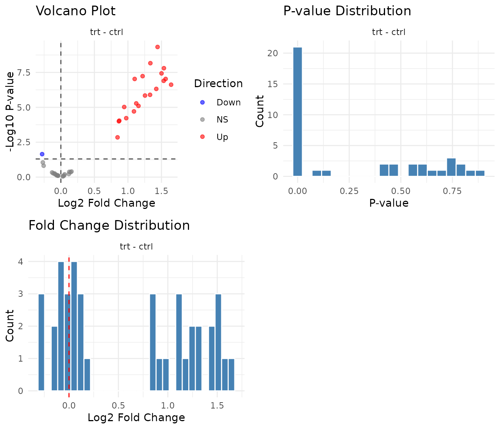

Factorial Designs with GLM
glm_analysis.RmdWhen you need GLM
Pairwise tests work well for simple two-group comparisons. But real experiments often have multiple factors:
- Treatment × Timepoint (does treatment effect change over time?)
- Genotype × Treatment (does treatment work differently in wildtype vs knockout?)
- Condition × Dose × Timepoint (complex factorial)
GLM (Generalised Linear Model) handles these designs naturally. It models all factors simultaneously, accounting for their individual and combined effects.
Why Gamma GLM?
Proteomics abundances have particular properties:
- Always positive: You can’t have negative abundance
- Right-skewed: Many low values, few high values
- Variance scales with mean: More abundant peptides have more variable measurements
The Gamma distribution models data with exactly these properties. The log link function means model coefficients are interpretable as fold changes - which is what you want.
Important: Zeros cause Gamma GLM to fail. This is correct behaviour - a zero abundance is either a missing value (below detection limit) or a data error. pepdiff treats zeros as missing data.
Example: 2×2 factorial design
A 2×2 factorial design means two factors, each with two levels. Here: treatment (ctrl, trt) × timepoint (0h, 24h). This gives four experimental conditions:
| 0h | 24h | |
|---|---|---|
| ctrl | ✓ | ✓ |
| trt | ✓ | ✓ |
Each peptide is measured in all four conditions (with replicates), letting us ask: does treatment have an effect? Does that effect depend on timepoint?
We’ll use 5 replicates per condition (20 total observations per peptide) and simulate different effect patterns to see how GLM handles them.
The simulated peptide groups
To illustrate how GLM handles different effect patterns, we simulate 40 peptides in four groups:
| Group | Peptides | Effect Pattern | What GLM should find |
|---|---|---|---|
| A | PEP_001–010 | Treatment effect only | Main effect significant, same at both timepoints |
| B | PEP_011–020 | Timepoint effect only | No treatment effect (treatment comparison) |
| C | PEP_021–030 | Interaction | Treatment works at 24h but not 0h |
| D | PEP_031–040 | No effect | Nothing significant |
What these patterns look like in raw data
Here’s what the mean abundances look like for each group across the four conditions (using a baseline of ~10 for illustration):
| Group | ctrl @ 0h | ctrl @ 24h | trt @ 0h | trt @ 24h | Pattern |
|---|---|---|---|---|---|
| A | 10 | 10 | 30 | 30 | trt 3× higher at both timepoints |
| B | 10 | 30 | 10 | 30 | 24h 3× higher, same for ctrl and trt |
| C | 10 | 10 | 10 | 40 | trt effect only at 24h (interaction) |
| D | 10 | 10 | 10 | 10 | no differences |
Notice how Group C is the tricky one: treatment has no effect at 0h (10 vs 10) but a 4-fold effect at 24h (10 vs 40). The main effect would average these, giving ~2-fold - which doesn’t represent either timepoint accurately.
We’ll refer back to these groups as we analyse the results.
set.seed(456)
n_peptides <- 40
n_reps <- 5 # 5 reps per condition = 20 observations per peptide
peptides <- paste0("PEP_", sprintf("%03d", 1:n_peptides))
genes <- paste0("GENE_", LETTERS[((1:n_peptides - 1) %% 26) + 1])
# Step 1: Create base abundance for each peptide
# Each peptide gets ONE base value shared across all its observations
peptide_info <- tibble(
peptide = peptides,
gene_id = genes,
pep_num = 1:n_peptides,
base = rgamma(n_peptides, shape = 6, rate = 0.6) # Random baseline abundance
)
# Step 2: Create the experimental design (all combinations)
# 40 peptides × 2 treatments × 2 timepoints × 5 reps = 800 observations
design <- expand.grid(
peptide = peptides,
treatment = c("ctrl", "trt"),
timepoint = c("0h", "24h"),
bio_rep = 1:n_reps,
stringsAsFactors = FALSE
)
# Step 3: Join design with peptide info and apply effects
sim_data <- design %>%
left_join(peptide_info, by = "peptide") %>%
mutate(
# Group A (peptides 1-10): Treatment effect only
# trt is 3-fold higher than ctrl, same at both timepoints
trt_effect = ifelse(pep_num <= 10 & treatment == "trt", 3, 1),
# Group B (peptides 11-20): Timepoint effect only
# 24h is 3-fold higher than 0h, same for both treatments
# NO treatment effect - ctrl and trt should be identical
time_effect = ifelse(pep_num > 10 & pep_num <= 20 & timepoint == "24h", 3, 1),
# Group C (peptides 21-30): Interaction
# Treatment works at 24h (4-fold) but NOT at 0h
int_effect = case_when(
pep_num > 20 & pep_num <= 30 & treatment == "trt" & timepoint == "24h" ~ 4,
TRUE ~ 1
),
# Group D (peptides 31-40): No effect
# All effect multipliers are 1 (no change)
# Final abundance = base × all effects, with Gamma noise
value = rgamma(n(), shape = 15, rate = 15 / (base * trt_effect * time_effect * int_effect))
) %>%
select(peptide, gene_id, treatment, timepoint, bio_rep, value)
# Import
temp_file <- tempfile(fileext = ".csv")
write.csv(sim_data, temp_file, row.names = FALSE)
dat <- read_pepdiff(
temp_file,
id = "peptide",
gene = "gene_id",
value = "value",
factors = c("treatment", "timepoint"),
replicate = "bio_rep"
)
dat
#> pepdiff_data object
#> -------------------
#> Peptides: 40
#> Observations: 800
#> Factors: treatment, timepoint
#>
#> Design:
#> treatment=ctrl, timepoint=0h: 5 reps
#> treatment=ctrl, timepoint=24h: 5 reps
#> treatment=trt, timepoint=0h: 5 reps
#> treatment=trt, timepoint=24h: 5 reps
#>
#> No missing valuesBasic GLM analysis: main effects
results <- compare(
dat,
compare = "treatment",
ref = "ctrl",
method = "glm"
)
#> NOTE: Results may be misleading due to involvement in interactions
#> NOTE: Results may be misleading due to involvement in interactions
#> NOTE: Results may be misleading due to involvement in interactions
#> NOTE: Results may be misleading due to involvement in interactions
#> NOTE: Results may be misleading due to involvement in interactions
#> NOTE: Results may be misleading due to involvement in interactions
#> NOTE: Results may be misleading due to involvement in interactions
#> NOTE: Results may be misleading due to involvement in interactions
#> NOTE: Results may be misleading due to involvement in interactions
#> NOTE: Results may be misleading due to involvement in interactions
#> NOTE: Results may be misleading due to involvement in interactions
#> NOTE: Results may be misleading due to involvement in interactions
#> NOTE: Results may be misleading due to involvement in interactions
#> NOTE: Results may be misleading due to involvement in interactions
#> NOTE: Results may be misleading due to involvement in interactions
#> NOTE: Results may be misleading due to involvement in interactions
#> NOTE: Results may be misleading due to involvement in interactions
#> NOTE: Results may be misleading due to involvement in interactions
#> NOTE: Results may be misleading due to involvement in interactions
#> NOTE: Results may be misleading due to involvement in interactions
#> NOTE: Results may be misleading due to involvement in interactions
#> NOTE: Results may be misleading due to involvement in interactions
#> NOTE: Results may be misleading due to involvement in interactions
#> NOTE: Results may be misleading due to involvement in interactions
#> NOTE: Results may be misleading due to involvement in interactions
#> NOTE: Results may be misleading due to involvement in interactions
#> NOTE: Results may be misleading due to involvement in interactions
#> NOTE: Results may be misleading due to involvement in interactions
#> NOTE: Results may be misleading due to involvement in interactions
#> NOTE: Results may be misleading due to involvement in interactions
#> NOTE: Results may be misleading due to involvement in interactions
#> NOTE: Results may be misleading due to involvement in interactions
#> NOTE: Results may be misleading due to involvement in interactions
#> NOTE: Results may be misleading due to involvement in interactions
#> NOTE: Results may be misleading due to involvement in interactions
#> NOTE: Results may be misleading due to involvement in interactions
#> NOTE: Results may be misleading due to involvement in interactions
#> NOTE: Results may be misleading due to involvement in interactions
#> NOTE: Results may be misleading due to involvement in interactions
#> NOTE: Results may be misleading due to involvement in interactions
results
#> pepdiff_results object
#> ----------------------
#> Method: glm
#> Peptides: 40
#> Comparisons: 1
#> Total tests: 40
#>
#> Significant (FDR < 0.05): 21 (52.5%)
#> Marked significant: 21This fits a Gamma GLM for each peptide with both treatment and timepoint as predictors, then extracts the treatment contrast (trt vs ctrl) averaged across timepoints. This averaged effect is called a “marginal” or “main” effect.
Did GLM find the treatment effects?
Since we simulated this data, we know the truth:
- Group A: 3-fold treatment effect at both timepoints
- Group B: No treatment effect (the timepoint change affects ctrl and trt equally)
- Group C: 4-fold treatment effect at 24h, but no effect at 0h
- Group D: No effect
Let’s see what the GLM main effect analysis finds:
results$results %>%
mutate(
pep_num = as.numeric(gsub("PEP_", "", peptide)),
group = case_when(
pep_num <= 10 ~ "A: Treatment only",
pep_num <= 20 ~ "B: Timepoint only",
pep_num <= 30 ~ "C: Interaction",
TRUE ~ "D: No effect"
)
) %>%
group_by(group) %>%
summarise(
n_significant = sum(significant),
n_peptides = n(),
median_fc = round(median(fold_change, na.rm = TRUE), 2)
)
#> # A tibble: 4 × 4
#> group n_significant n_peptides median_fc
#> <chr> <int> <int> <dbl>
#> 1 A: Treatment only 10 10 2.77
#> 2 B: Timepoint only 0 10 0.99
#> 3 C: Interaction 10 10 2.05
#> 4 D: No effect 1 10 0.97- Group A: All 10 detected ✓ — the consistent 3-fold treatment effect is correctly found
- Group B: 0 detected ✓ — correctly identifies no treatment effect (the timepoint change affects both ctrl and trt equally, so trt/ctrl ≈ 1)
- Group C: All 10 detected — but note the diluted fold change (~2 instead of 4). The main effect averages the 24h effect (4-fold) with the 0h effect (1-fold), giving ~2-fold
- Group D: 0-1 detected ✓ — correctly negative (1 false positive at α=0.05 is expected by chance)
plot(results)
Stratified comparisons with within
The main effect averages across timepoints. But Group C has an effect at 24h only - the main effect diluted a 4-fold change to ~2-fold. Can we recover the true effect?
Use the within argument to get conditional
effects - the treatment effect within each timepoint
separately:
results_stratified <- compare(
dat,
compare = "treatment",
ref = "ctrl",
within = "timepoint",
method = "glm"
)
results_stratified
#> pepdiff_results object
#> ----------------------
#> Method: glm
#> Peptides: 40
#> Comparisons: 1
#> Total tests: 80
#>
#> Significant (FDR < 0.05): 30 (37.5%)
#> Marked significant: 30Now we get separate comparisons: treatment effect at 0h, and treatment effect at 24h.
Stratified results by group
Let’s see how each group looks when we analyse timepoints separately:
results_stratified$results %>%
mutate(
pep_num = as.numeric(gsub("PEP_", "", peptide)),
group = case_when(
pep_num <= 10 ~ "A: Treatment only",
pep_num <= 20 ~ "B: Timepoint only",
pep_num <= 30 ~ "C: Interaction",
TRUE ~ "D: No effect"
)
) %>%
group_by(group, timepoint) %>%
summarise(
n_significant = sum(significant),
median_fc = round(median(fold_change, na.rm = TRUE), 2),
.groups = "drop"
) %>%
tidyr::pivot_wider(
names_from = timepoint,
values_from = c(n_significant, median_fc)
)
#> # A tibble: 4 × 5
#> group n_significant_0h n_significant_24h median_fc_0h median_fc_24h
#> <chr> <int> <int> <dbl> <dbl>
#> 1 A: Treatment on… 10 10 2.6 2.86
#> 2 B: Timepoint on… 0 0 0.99 0.94
#> 3 C: Interaction 0 10 1.01 4.09
#> 4 D: No effect 0 0 1.01 0.96What stratified analysis reveals:
- Group A: FC ≈ 3 at both timepoints — the main effect was accurate
- Group B: FC ≈ 1 at both timepoints, 0 significant — correctly negative at both
- Group C: FC ≈ 1 at 0h, FC ≈ 4 at 24h — now we see the true 4-fold effect!
- Group D: FC ≈ 1 at both, ~0 significant — correctly negative
For Group C, stratified analysis recovers the true 4-fold effect at 24h that was diluted to ~2-fold in the main effect.
Handling interactions
Group C illustrates an interaction: the treatment effect depends on timepoint. The main effect (FC ≈ 2) doesn’t represent either condition accurately - it’s the average of a 4-fold effect and no effect.
The emmeans warning: If you see “Results may be misleading due to involvement in interactions”, it means exactly this - the averaged main effect may not represent any real biological condition.
When to use main effects vs stratified
# Compare main vs stratified for all groups
main_summary <- results$results %>%
mutate(
pep_num = as.numeric(gsub("PEP_", "", peptide)),
group = case_when(
pep_num <= 10 ~ "A", pep_num <= 20 ~ "B",
pep_num <= 30 ~ "C", TRUE ~ "D"
)
) %>%
group_by(group) %>%
summarise(main_fc = round(median(fold_change, na.rm = TRUE), 2))
strat_summary <- results_stratified$results %>%
mutate(
pep_num = as.numeric(gsub("PEP_", "", peptide)),
group = case_when(
pep_num <= 10 ~ "A", pep_num <= 20 ~ "B",
pep_num <= 30 ~ "C", TRUE ~ "D"
)
) %>%
group_by(group, timepoint) %>%
summarise(fc = round(median(fold_change, na.rm = TRUE), 2), .groups = "drop") %>%
tidyr::pivot_wider(names_from = timepoint, values_from = fc)
left_join(main_summary, strat_summary, by = "group")
#> # A tibble: 4 × 4
#> group main_fc `0h` `24h`
#> <chr> <dbl> <dbl> <dbl>
#> 1 A 2.77 2.6 2.86
#> 2 B 0.99 0.99 0.94
#> 3 C 2.05 1.01 4.09
#> 4 D 0.97 1.01 0.96Use main effects when: the effect is consistent across conditions (Group A: ~3 at both timepoints, main ≈ 3)
Use stratified (within) when: the
effect differs across conditions (Group C: ~1 at 0h, ~4 at 24h, main ≈ 2
is misleading)
Checking convergence
Not every peptide’s model will converge. This happens when: - Too few observations for that peptide - Extreme values or near-zero variance - Data patterns that the model can’t fit
# Check diagnostics
n_converged <- sum(results$diagnostics$converged)
n_failed <- sum(!results$diagnostics$converged)
cat("Converged:", n_converged, "\n")
#> Converged: 40
cat("Failed:", n_failed, "\n")
#> Failed: 0Failed peptides are excluded from results. This is correct behaviour - if the model can’t fit, you shouldn’t trust its estimates.
# View failed peptides (if any)
results$diagnostics %>%
filter(!converged) %>%
select(peptide, converged)Common causes of convergence failure: - Peptide measured in too few samples - All values identical (zero variance) - Extreme outliers - Too many missing values
What to do: - Check if failed peptides have data quality issues - Consider whether they have enough observations for the model complexity - Don’t force convergence - if it fails, you need more data or a simpler model - See peppwR for power analysis and sample size planning
Model checking
The diagnostics slot contains model information:
# Deviance: lower is better fit (relative to other peptides)
results$diagnostics %>%
arrange(desc(deviance)) %>%
head()
#> # A tibble: 6 × 7
#> peptide converged error deviance residuals std_residuals fitted
#> <chr> <lgl> <chr> <dbl> <named list> <named list> <named list>
#> 1 PEP_025 TRUE NA 1.98 <dbl [20]> <dbl [20]> <dbl [20]>
#> 2 PEP_015 TRUE NA 1.89 <dbl [20]> <dbl [20]> <dbl [20]>
#> 3 PEP_040 TRUE NA 1.62 <dbl [20]> <dbl [20]> <dbl [20]>
#> 4 PEP_019 TRUE NA 1.42 <dbl [20]> <dbl [20]> <dbl [20]>
#> 5 PEP_017 TRUE NA 1.37 <dbl [20]> <dbl [20]> <dbl [20]>
#> 6 PEP_008 TRUE NA 1.34 <dbl [20]> <dbl [20]> <dbl [20]>The error column contains diagnostic messages only when
models fail to converge - NA means no error occurred
(success). The deviance column measures model fit: high
deviance relative to other peptides may indicate poor fit. Investigate
these peptides if they’re in your significant results.
Exporting results
The results are stored in a tidy tibble, ready for export:
# Main effect results
glimpse(results$results)
#> Rows: 40
#> Columns: 11
#> $ peptide <chr> "PEP_001", "PEP_002", "PEP_003", "PEP_004", "PEP_005", "PE…
#> $ gene_id <chr> "GENE_A", "GENE_B", "GENE_C", "GENE_D", "GENE_E", "GENE_F"…
#> $ comparison <chr> "trt - ctrl", "trt - ctrl", "trt - ctrl", "trt - ctrl", "t…
#> $ fold_change <dbl> 2.5219150, 2.9008270, 2.5137042, 3.1246797, 2.8298924, 2.3…
#> $ log2_fc <dbl> 1.33451967, 1.53646428, 1.32981487, 1.64370830, 1.50074718…
#> $ estimate <dbl> 0.92501854, 1.06499588, 0.92175743, 1.13933177, 1.04023868…
#> $ se <dbl> 0.08385427, 0.10236298, 0.12294039, 0.13358011, 0.10630226…
#> $ test <chr> "glm", "glm", "glm", "glm", "glm", "glm", "glm", "glm", "g…
#> $ p_value <dbl> 6.895588e-09, 1.578496e-08, 1.273022e-06, 2.392305e-07, 3.…
#> $ fdr <dbl> 1.379118e-07, 2.104661e-07, 4.629170e-06, 1.063247e-06, 3.…
#> $ significant <lgl> TRUE, TRUE, TRUE, TRUE, TRUE, TRUE, TRUE, TRUE, TRUE, TRUE…Stratified results include the within factor as an
additional column:
# Stratified results - note the timepoint column
glimpse(results_stratified$results)
#> Rows: 80
#> Columns: 13
#> $ peptide <chr> "PEP_001", "PEP_002", "PEP_003", "PEP_004", "PEP_005", "PE…
#> $ gene_id <chr> "GENE_A", "GENE_B", "GENE_C", "GENE_D", "GENE_E", "GENE_F"…
#> $ comparison <chr> "trt - ctrl", "trt - ctrl", "trt - ctrl", "trt - ctrl", "t…
#> $ fold_change <dbl> 2.3064900, 2.6433935, 2.5347717, 3.2471510, 2.7527029, 2.5…
#> $ log2_fc <dbl> 1.20569901, 1.40239120, 1.34185580, 1.69917447, 1.46084893…
#> $ estimate <dbl> 0.83572687, 0.97206351, 0.93010356, 1.17777799, 1.01258332…
#> $ se <dbl> 0.11726930, 0.16455790, 0.13108476, 0.22764781, 0.15943591…
#> $ test <chr> "glm", "glm", "glm", "glm", "glm", "glm", "glm", "glm", "g…
#> $ p_value <dbl> 9.935613e-05, 3.588548e-04, 1.024537e-04, 8.492950e-04, 2.…
#> $ fdr <dbl> 0.0010245372, 0.0017942740, 0.0010245372, 0.0037746444, 0.…
#> $ significant <lgl> TRUE, TRUE, TRUE, TRUE, TRUE, TRUE, TRUE, TRUE, TRUE, TRUE…
#> $ stratum <chr> "timepoint=0h", "timepoint=0h", "timepoint=0h", "timepoint…
#> $ timepoint <chr> "0h", "0h", "0h", "0h", "0h", "0h", "0h", "0h", "0h", "0h"…Save to CSV for downstream analysis:
# All results
write.csv(results$results, "glm_results.csv", row.names = FALSE)
# Significant hits only
results$results %>%
filter(significant) %>%
write.csv("significant_hits.csv", row.names = FALSE)
# Stratified results (one row per peptide per timepoint)
write.csv(results_stratified$results, "stratified_results.csv", row.names = FALSE)Practical recommendations
-
Start simple: Run without
withinfirst to get main effects -
Check for interactions: If effects differ across
factor levels, use
within(see below) - Inspect convergence: Many failures suggest the model is too complex for your data
- Look at diagnostics: Volcano and p-value histogram should look reasonable
- Don’t over-interpret: These are statistical estimates, not ground truth
Quick interaction check
To check for interactions in your own data, compare fold changes across strata:
compare(dat, compare = "treatment", ref = "ctrl",
within = "timepoint", method = "glm")$results %>%
group_by(timepoint) %>%
summarise(median_fc = median(fold_change), .groups = "drop")If these FCs differ substantially (e.g., 1 vs 4), you have an interaction - use stratified results.
When GLM struggles
- Very small sample sizes (< 3 per condition)
- Heavy-tailed or highly non-normal data
- Many zeros (consider whether these are true zeros or missing)
If GLM diagnostics look poor, try the ART method - see
vignette("art_analysis").